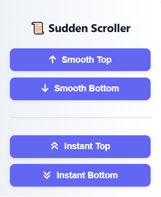
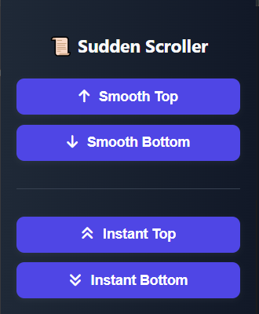

✨ What is Sudden Scroller?
Sudden Scroller is a lightweight Extension that adds smooth or instant scroll-to-top and scroll-to-bottom buttons to any webpage you're on. It's perfect for long articles, documentation, or shopping pages.
🚀 Features
- 🔼 Smooth scroll to top
- 🔽 Smooth scroll to bottom
- ⚡ Instant top/bottom scroll
- 🌓 Dark mode support
- 🧩 Lightweight and fast
📸 Screenshots


📖 How to Use
- Click "Add to Chrome" above.
- Pin the extension to your toolbar.
- Click the icon and use the buttons to scroll up/down.
❓ FAQ
Q: Does it work on all websites?
A: It works on almost all scrollable pages. However, due to Chrome’s security restrictions, it does not
work on certain sites like:
- Gmail (mail.google.com)
- Chrome Web Store (chrome.google.com)
- Internal Chrome pages (like
chrome://extensions)
Q: Is it safe?
A: Yes, 100%. This extension does not collect or send any of your data. It only scrolls the
current web page you are viewing.